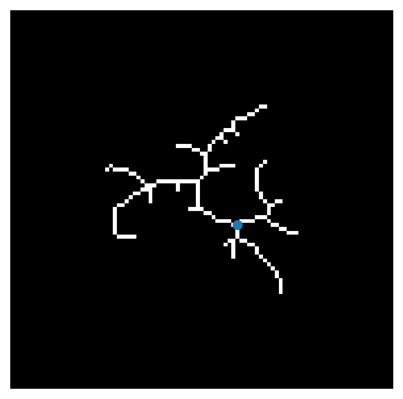

Sholl analysis in Skan#
Skan provides a function to perform Sholl analysis, which counts the number of processes crossing circular (2D) or spherical (3D) shells from a given center point. Commonly, the center point is the soma, or cell body, of a neuron, but the method can be used to compare general skeleton structures when a root or center point is defined.
%matplotlib inline
%config InlineBackend.figure_format='retina'
import matplotlib.pyplot as plt
import numpy as np
import zarr
neuron = np.asarray(zarr.open('../example-data/neuron.zarr.zip'))
fig, ax = plt.subplots()
ax.imshow(neuron, cmap='gray')
ax.scatter(57, 54)
ax.set_axis_off()
plt.show()

This is the skeletonized image of a neuron. The cell body, or soma, has been manually annotated by a researcher based on the source image. We can use the function skan.sholl_analysis to count the crossings of concentric circles, centered on the cell body, by the cell’s processes.
import pandas as pd
from skan import Skeleton, sholl_analysis
# make the skeleton object
skeleton = Skeleton(neuron)
# define the neuron center/soma
center = np.array([54, 57])
# define radii at which to measure crossings
radii = np.arange(4, 45, 4)
# perform sholl analysis
center, radii, counts = sholl_analysis(
skeleton, center=center, shells=radii
)
table = pd.DataFrame({'radius': radii, 'crossings': counts})
table
| radius | crossings | |
|---|---|---|
| 0 | 4 | 4 |
| 1 | 8 | 5 |
| 2 | 12 | 6 |
| 3 | 16 | 5 |
| 4 | 20 | 4 |
| 5 | 24 | 5 |
| 6 | 28 | 4 |
| 7 | 32 | 1 |
| 8 | 36 | 0 |
| 9 | 40 | 0 |
| 10 | 44 | 0 |
We can visualize this using functions from skan.draw and matplotlib.
from skan import draw
# make two subplots
fig, (ax0, ax1) = plt.subplots(nrows=1, ncols=2, figsize=(8, 4))
# draw the skeleton
draw.overlay_skeleton_2d_class(
skeleton, skeleton_colormap='viridis_r', vmin=0, axes=ax0
)
# draw the shells
draw.sholl_shells(center, radii, axes=ax0)
# fiddle with plot visual aspects
ax0.autoscale_view()
ax0.set_facecolor('black')
ax0.set_ylim(75, 20)
ax0.set_xlim(20, 80)
ax0.set_aspect('equal')
# in second subplot, plot the Sholl analysis
ax1.plot('radius', 'crossings', data=table)
ax1.set_xlabel('radius')
ax1.set_ylabel('crossings')
plt.show()